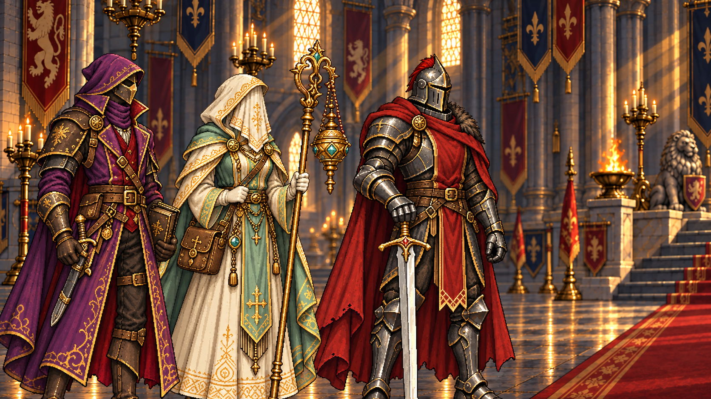

RPGThreeJS · Étude de mise en scène
Avant la première parole d’Alaric
Entrer dans la relation d’audience, s’arrêter et se rendre disponible à l’écoute.


01 / 06
La distance de l’audience
Le lieu et les quatre présences, avant tout mandat.
Chargement des six illustrations…
Réduction des mouvements active. Vous pouvez parcourir les plans avec les flèches ; la lecture démarre uniquement sur demande.